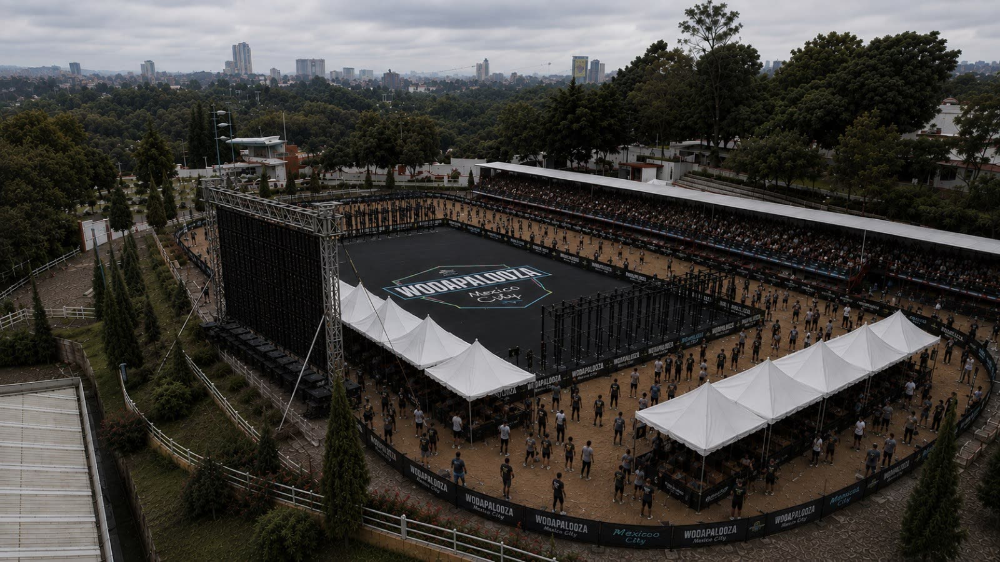
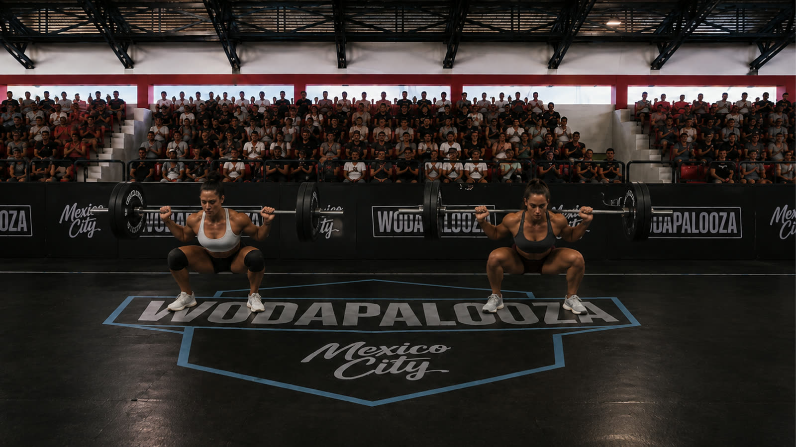
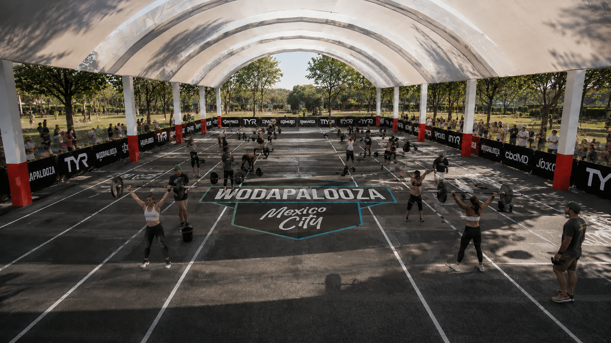
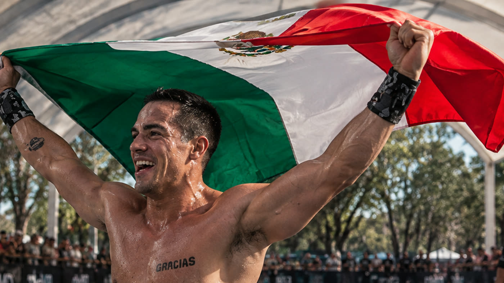

Elite
Men & Women
The highest level of competition, featuring top athletes competing for the Wodapalooza Mexico City podium and prize purse.
December 4–6, 2026 · Centro Ecuestre SEDENA
From December 4–6, 2026, Wodapalooza arrives in Mexico City for the first time, bringing three days of competition, fitness, community, and entertainment to one of the most vibrant cities in the world.
Hosted at the Centro Ecuestre SEDENA, Wodapalooza Mexico City will bring together elite athletes, experienced competitors, emerging talent, and the broader fitness community for a festival built around functional fitness and the energy that has made Wodapalooza a global destination for athletes and fans.
More than just a competition, Wodapalooza Mexico City is a complete fitness experience, combining high-level competition with brand activations, an expo, music, food, community experiences, and plenty of opportunities for spectators to be part of the action.
Centro Ecuestre SEDENA offers a distinctive setting for a competition of this scale. Set on Avenida Constituyentes, it has generous open ground, room for multiple competition floors, spectator areas, and straightforward access from Polanco, Condesa, Roma and Santa Fe.



Wodapalooza Mexico City features different competition formats designed to bring together athletes across multiple skill levels and age groups.
Men & Women
The highest level of competition, featuring top athletes competing for the Wodapalooza Mexico City podium and prize purse.
Men & Women
Designed for experienced competitive athletes capable of performing advanced movements, heavier loads, and highly demanding workouts.
Men & Women
For athletes with solid functional fitness experience who are ready to test themselves in a competitive environment.
Men & Women
Age-group divisions designed to provide competitive and challenging workouts appropriate for each category.
Boys & Girls
A competitive platform for the next generation of functional fitness athletes.
Open
A pairs format, giving athletes the opportunity to experience the competition alongside a partner. Registration for these divisions is direct and subject to limited availability.
Throughout the three-day festival, athletes will face multiple workouts designed to test different aspects of fitness — strength, endurance, gymnastics, Olympic weightlifting, running, functional movements and technical skills, with programming and standards adapted to each competitive division.
There is no single fixed race distance. Athletes must be prepared for different workouts, distances, loads, movements and challenges throughout the weekend.
Prizes: the Elite division carries a significant cash prize purse for both men and women. See the full division standards ↗
Wodapalooza Mexico City is designed as a festival for the entire fitness community. Beyond the competition floor, athletes and spectators will be able to experience:

Hosting Wodapalooza in Mexico City brings the competition to one of Latin America’s largest and most exciting destinations. Athletes and visitors can combine their weekend with everything the city has to offer — from its world-renowned food scene and nightlife to museums, architecture, parks and some of Mexico’s most iconic cultural landmarks.
Areas such as Polanco, Roma, Condesa and Santa Fe provide convenient accommodation for the weekend, with Polanco, Roma and Condesa offering particularly strong access to the city’s dining, nightlife and cultural scene.
Three days. One city. One community.
Where to stay, what to see, how to get around and what to know about the altitude — the full Mexico City guide, in English and Spanish.
Mexico City guide